The Laxmi Vilas Palace in Vadodara,was constructed by the Gaekwad Family,a prominent maratha family,who ruled the Baroda State.A great piece of infrastructure has been built and fantastic interior too.There is a golf- course located adjacent to the palace.It’s huge and breathtaking.
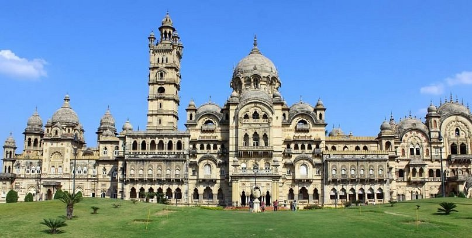Maharaja Fateh Singh Museum is a museum housed within the Maharaja’s palace in vadodara.The place also has famouspaintings of Raja Ravi Verma.Many articles of British and Italian with many bronze sculptures.
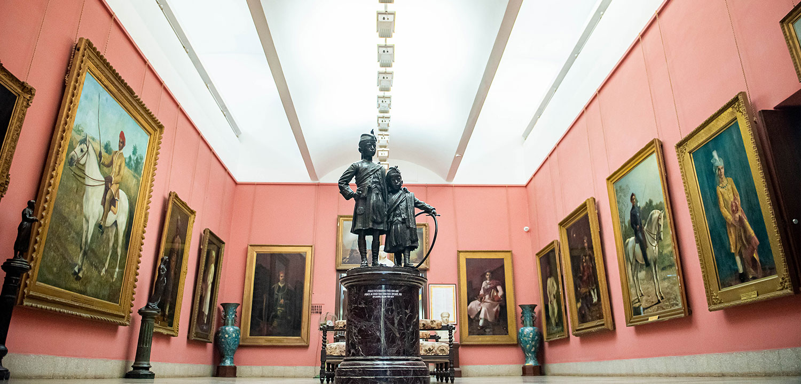The EME temple or “Dakshinamurthy Temple” dedicated to lord Shiva,run by Indian army authorities in the city of vadodara.It is unique in its concept and design and its geodesic structure,covered with aluminium sheets.This temple is a major attraction for both tourist and devotees and is one of its kind in the world.
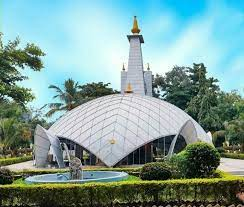Sur-Sagar Lake also known as Chand Talao is a lake situated in the middle of the city of the Vadodara.The water in the lake remains for the whole year.A concrete wall surrounds the lake.The gold plated statue of Lord Shiva stands in the middle of the Lake and now has been officially dedicated to the city and it’s people.The statue of lord shiva is lit with lights on MahaShivratri.
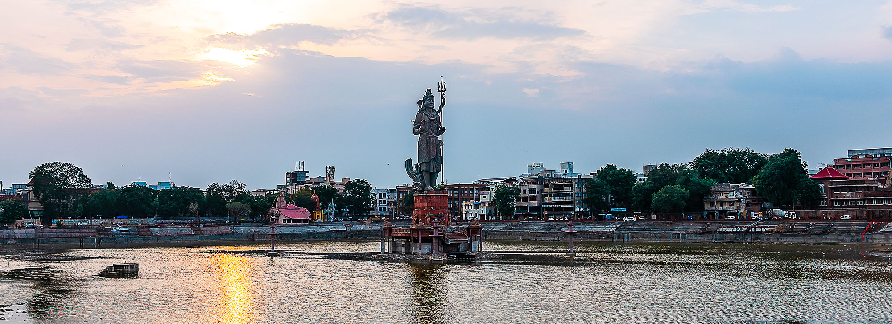Mandvi Gate is a prominent centuries is a old-city gate.The whole area is full of shopping.The gate is also known as Char-Rasta,you can relocate to different areas from a single cross road.For devotees,the oldest Mataji temple is located near the gate.Even all authentic shops are located near it.
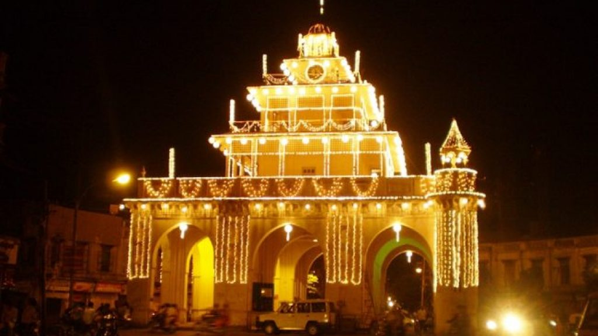Sri Aurobindo Ashram is a beautiful colonial style heritage bungalow where Maharishi Aurobindo stayed when he was working at Baroda.It has a very attractive gallery depicting the life of Shri Aurobindo and Ma.It has many artefacts related to both these great saints.One can find place to meditate and it’s very peaceful and soothing.
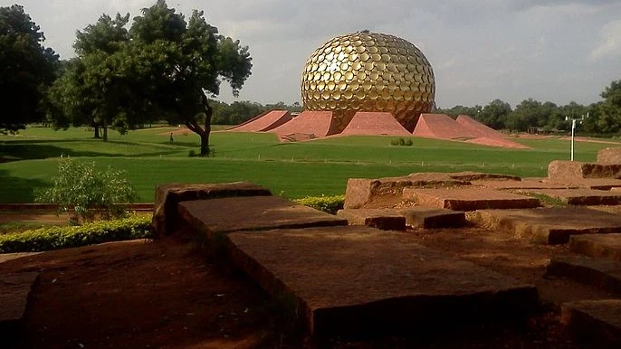Baroda Museum and Picture gallery is a century-old museum and gallery displaying Asian and Middle Eastern paintings,sculptures and weaponry.The Egyptian mummy and skeleton of a baby blue whale are major attractions.
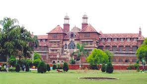Sayaji Garden is regarded as one of the largest public gardens in the western part of the country.Over 98 different species of trees make this garden as one of the most enticing tourist places in Vadodara.
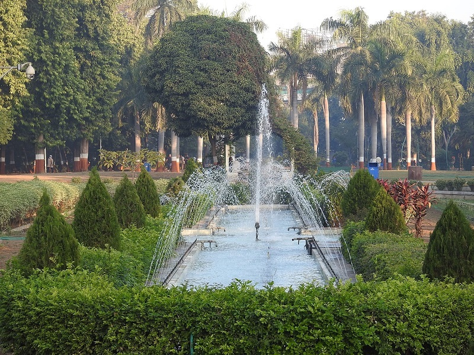Khanderao Market is a grand edifice that adorns the cityspace of vadodara.A trip to this site will allow you to enjoy the beauty of this edifice while witnessing a slice of regular life of vadodara.
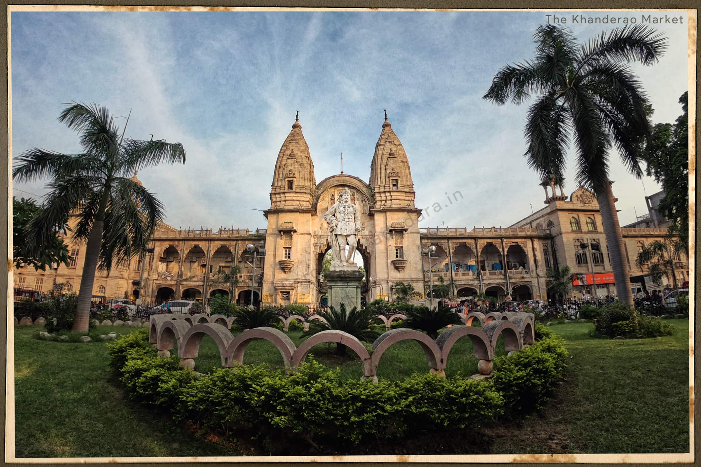Maharaja Sayajirao University is one of the premier universities of the country.The main building of this institution displays a fine confluence of Indian and Byzantine architectural styles and faculty of arts.The sprawling green campus and the impressive structure of the university make it a must-visit attraction for the tourists.
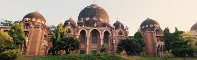Ajwa Nimeta Dam Garden is a perfectly manicured green lawns and towering palm trees welcomes you to the serenity of the Ajwa Nimeta Dam Garden.The main attraction of this garden is a row of perfectly aligned fountains that offer a mesmerising show every evening.This place never fails to delight adults and children alike.
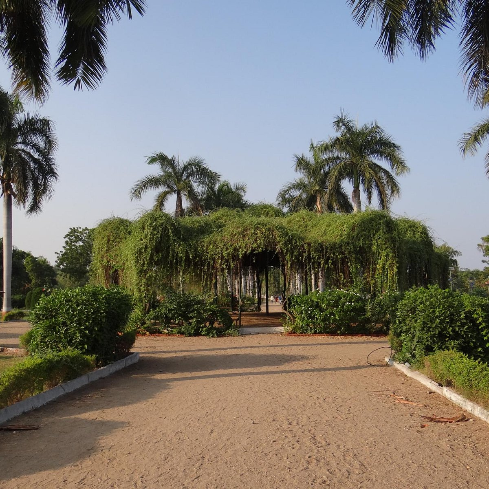Narmada Canal is a perfect serene place to enjoy a day-long outing or picnic,which is located a short drive from the city.The blue water of the canal and the scenic surroundings make for an ideal spot to spend some lovely moments.
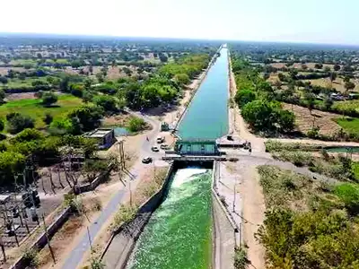Ajwa Water Park is one of the best water parks in vadodara where you can indulge in day-long aquatic fun.With amazing attractions like the Rain Dance,the Dark hole side,the Pendulum slide and lots more , you can look forward to a great time at this water park.
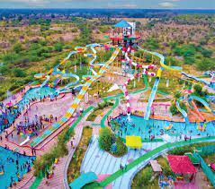Champaner-Pavagadh Archaeological Park is a UNESCO world heritage site with a number of monuments.Speckled with palaces,mosques,temples,tombs, arched gateways,step wells,residential complexes,granaries,tanks and a lot more.
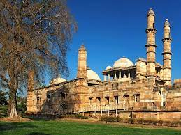Jambughoda Wildlife Sanctuary is best combined when visiting these cities. The wildlife sanctuary consists of forested hills with teeming wildlife and avian species. A camping experience in close proximity to the wildlife is the highlight of the forest. One can book ahead at the
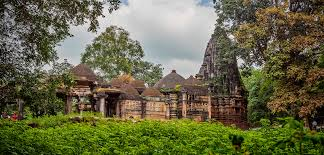